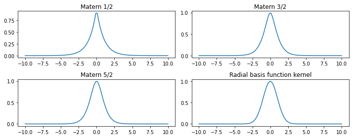
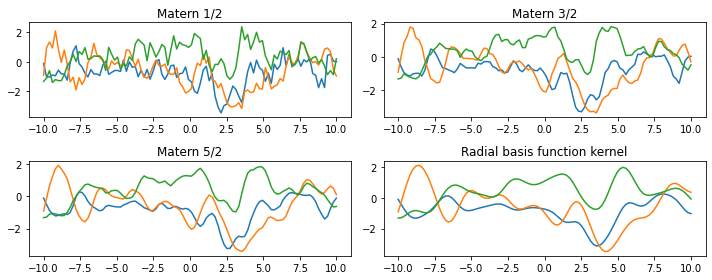

Stationary Kernel Samples
import gpjax as gpx
import jax.numpy as jnp
import jax.random as jr
import matplotlib.pyplot as plt
from jaxtyping import Float, Array
from jax.config import config
config.update("jax_enable_x64", True)
key = jr.PRNGKey(123)
Stationary Kernel Samples#
def plot_kernel(kernel_params: dict, index_points: Float[Array, "N 2"], ax):
N = int(jnp.sqrt(index_points.shape[0]))
prior = gpx.Prior(kernel=gpx.kernels.RBF(active_dims=[0, 1]))
params, *_ = gpx.initialise(prior, key).unpack()
params['kernel'] = kernel_params
sample = prior.predict(params)(index_points).sample(seed = key, sample_shape=(1, ))
return sample.reshape(N, N)
# Generate an 2D N x N grid of index points where each row is a pair of coordinates
index_points = jnp.linspace(-3, 3.1, num=50)
X = jnp.stack(jnp.meshgrid(index_points, index_points), axis=-1).reshape(-1, 2)
params = [{"lengthscale": jax.Array([[1., 0.5]]), "variance": jax.Array([1.0])},
{"lengthscale": jax.Array([[1.5, 1.]]), "variance": jax.Array([1.0])}]
fig, axes = plt.subplots(1, 2, figsize=(10, 5), subplot_kw={"projection": "3d"})
for ax, pa in zip(axes.ravel(), params):
y = plot_kernel(pa, X, ax)
ax.plot_surface(index_points, index_points, y, cmap="viridis", lw=0.5, rstride=1, cstride=1, edgecolor=None, alpha=0.5)
ax.set_xlabel("input $x_1$", labelpad=-1)
# ax.view_init(None, 180 + 50)
ax.set_zlim(-2.0, 3.0)
ax.set_zticks(range(-1, 3))
ax.set_zticklabels([])
ax.set_ylabel("input $x_2$", labelpad=-1)
---------------------------------------------------------------------------
NameError Traceback (most recent call last)
Cell In[2], line 13
11 index_points = jnp.linspace(-3, 3.1, num=50)
12 X = jnp.stack(jnp.meshgrid(index_points, index_points), axis=-1).reshape(-1, 2)
---> 13 params = [{"lengthscale": jax.Array([[1., 0.5]]), "variance": jax.Array([1.0])},
14 {"lengthscale": jax.Array([[1.5, 1.]]), "variance": jax.Array([1.0])}]
16 fig, axes = plt.subplots(1, 2, figsize=(10, 5), subplot_kw={"projection": "3d"})
18 for ax, pa in zip(axes.ravel(), params):
NameError: name 'jax' is not defined
kernels = [gpx.Matern12(), gpx.Matern32(), gpx.Matern52(), gpx.RBF()]
fig, axes = plt.subplots(2, 2, figsize=(10, 4), tight_layout=True)
X = jnp.linspace(-10, 10, 100).reshape(-1, 1)
zero_vec = jax.Array([[0]])
for a, k in zip(axes.ravel(), kernels):
params, *_ = gpx.initialise(k, key).unpack()
kx0 = k.cross_covariance(k, params, X, zero_vec)
a.plot(X, kx0)
a.set_title(k.name)

fig, axes = plt.subplots(2, 2, figsize=(10, 4), tight_layout=True)
X = jnp.linspace(-10, 10, 100).reshape(-1, 1)
zero_vec = jax.Array([[0]])
for a, k in zip(axes.ravel(), kernels):
prior = gpx.Prior(kernel=k)
params, *_ = gpx.initialise(prior, key).unpack()
prior_sample = prior.predict(params)(X).sample(seed=key, sample_shape=(3, )).T
a.plot(X, prior_sample)
a.set_title(k.name)

combinations = [gpx.kernels.]